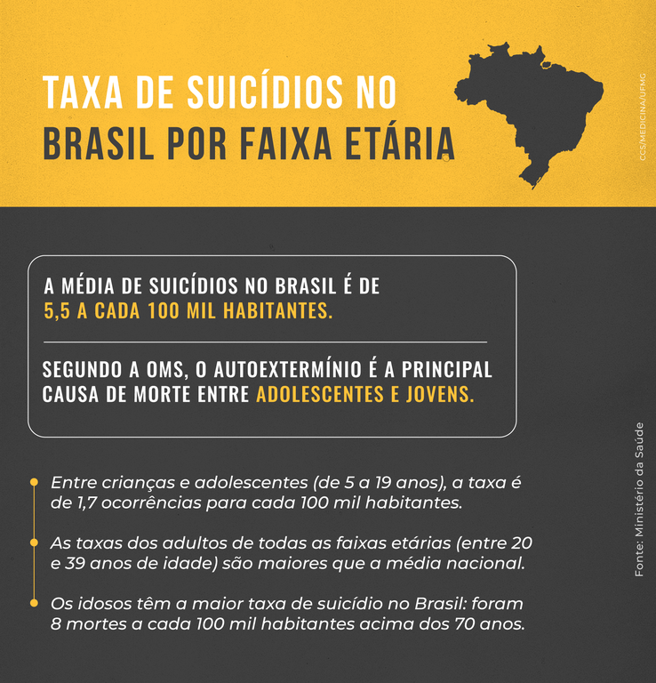

WWW - A imensa praça pública

WWW - A imensa praça pública
A internet, juntamente com os avanços tecnológicos advindos da Terceira Revolução Industrial caracteriza a Era da informação, era que estabeleceu-se mais forte do que nunca após o lançamento dos primeiros smartphones, uma corrida que quem ganhou foi Steve Jobs pela Apple em 2007, trazendo através do lançamento do Iphone um dispositivo inovador que permitia ao usuário se conectar à internet, e, desta forma usufruir de mares informacionais e meios de comunicação globais. Porém, isso foi aos poucos transformando a rede mundial em uma imensa praça pública, atraindo principalmente crianças e adolescentes, assim assustando seus pais e responsáveis que até mesmo hoje em dia segundo os próprios adolescentes mais de 82% destes afirmam saber mais acerca da internet do que seus pais. Cria-se então uma urgência para ensinar os responsáveis sobre os cuidados e direitos no uso da rede, para que eles desta forma ensinem de maneira apropriada a cidadania digital e fiquem cientes dos perigos existentes na internet, pois como cita o dramaturgo grego, Sófocles:
“Nada vasto entra na vida dos mortais sem uma maldição”.
Grupos de incitação ao suicídio - O caso do Discord
Grupos de incitação ao suicídio - O caso do Discord
Em 2023, principalmente no Brasil, foi acionado um alerta quando o caso do Discord veio a tona, executando a prisão de 4 indivíduos que atuaram dês de 2020 através da rede de comunicação Discord, infligindo estupro, chantagem e exposição intima de menores que frequentavam a mesma plataforma social. Diversos casos como esse tem reforçado no Brasil e mundo afora a emergente necessidade do conhecimento sobre a internet, como sociedade não podemos abraçar a ideia de que uma criança ou adolescente sem a maturidade e conhecimento suficientes possa flutuar pela internet sem um monitoramento adequado de seus responsáveis.
Em uma pesquisa do comitê gestor de internet do Brasil foi relatado que 11%* de crianças e adolescentes já tiveram acesso a páginas que ensinavam formas de se auto mutilar e 6% acessaram formas de cometer suicídio isso representa equivalentemente a 2.5 milhões de crianças e adolescentes no Brasil.
*93% de crianças e adolescentes de 9 a 17 anos no Brasil com acesso a internet totalizando 65.4 milhões.